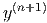

Voltar
O método de Adams-Moulton consiste de um esquema recursivo do tipo:
Exemplo 9.7.1. Adams-Moulton de quarta ordem
O método de Adams-Moulton é implícito, ou seja, exige que a cada passo, uma equação em  seja resolvida.